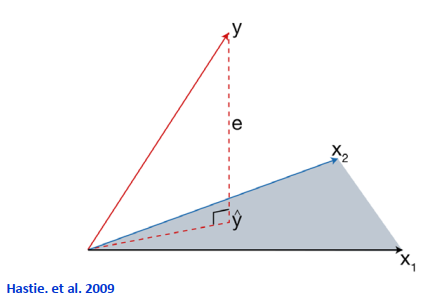
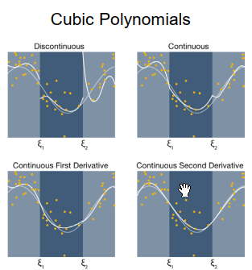
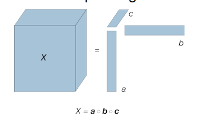
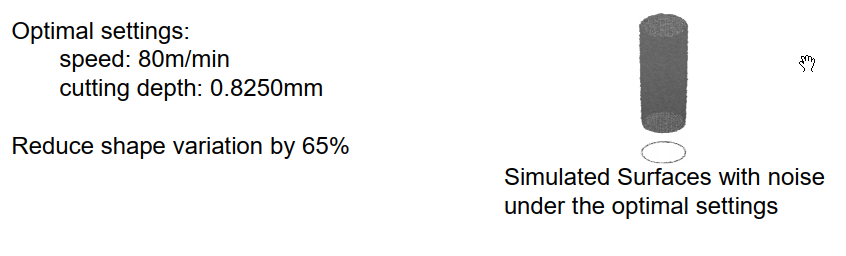

Exams are open-book and take-home style. They are not proctored, 1 week from open date to close date starting whenever and submitting prior to due date, and in format similar to homeworks.
Resources & Data
https://lib.stat.cmu.edu/datasets/
M1 Functional Data Analysis
Functional data can be roughly defined as a quantity or impulse whose variations represent information and is often represented as a function of time or space. The simplest example is an image where the pixel value is a function of it’s location
M1L1 Introduction
Understand the definition of big data
Understand concepts such as - curse of dimensionality - low-dimensional learning - define functional Data
Big data revolves around the three V(s) - Volume - the size of the data - Velocity - speed at which it is being generated - Variety - Data types in use (csv, images & videos, sensor readings, signal collection)
High Dimensional Data is defined as data with a large number of attributes. They need not be features though. so for example an image.
Here n is the size of the data, and p is the number of dimensions
——-
small n
Large n
small p
traditional stats with limited samples
Classic Large Sample Theory - Big Data Challenge
large p
HD Statistics and optimization - High Dimensional data challenge
Deep learning and Deep Neural Networks
Big Data Challenge: Data is too large to be stored on one machine. Frameworks like MapReduce and spark apply here
In this class we focus on the intersection of Large p and small n. This gives rise to the curse of dimensionality. - In many algorithms we will need \((\frac{1}{\epsilon})^p\) evaluations in order to obtain a solution within \(\epsilon\) of the optimum. If p is large then the number of evaluations increases considerably
HD Analytics challenge is mainly related to “curse of dimensionality”: - Model learning issue: As distance between observations increases with the dimensions, the sample size required for learning a model drastically increases. – Solution: Feature extraction and dimension reduction through low dimensional learning
It is often the case that high dimensional data will have a low dimensional structure. Meaning that we can often reduce the data to it’s most important structure without much loss
Low-Dimensional Learning Methods (That we will cover)
Functional Data Analysis - Splines - Smoothing Splines - Kernels
Suppose we have a collection of n IID data points \((x_1,y_1),...,(x_n,y_n)\), where x are independent (explanatory) and y is our response, dependent.
- Our goal is to build a function \(f(x)\) to model the relationship between x(s) and the y(s) - Most common approach is to minimize the sum of square errors loss function - \(\sum_i (y_i - f(x_i))^2\) - to do so we will want to impose the structure constraint - \(f(x) = \beta_0 + \beta_1 x_1 + ... + \beta_p x_p\)
Expressed in Linear Algebraic Matrix Notation - \(y = \beta X + \epsilon\)
+ y = 1 x n vector + X = n(row) x p(col) matrix (this may have an initial col of 1s to get an intercept) + \(\beta\) = 1 x n vector + \(\epsilon\) = 1 x n vector - minimize + \(L = \epsilon^T \epsilon = (y - X \beta)^T * (y - X \beta)\) - Resulting Estimate + \(\hat{\beta} = (X^T X)^{-1} X^T y\)
Example: See data - Chapter12_Runger2006.csv - perform a 2 variable linear regression (note you need to add an intercept column) - you should get the following result + \(\hat{y} = 2.26379 + 2.74427 x_1 + 0.01253 x_2\) + or something very similar

Geometric Interpretation
An alternative way of thinking about regression. Recall from above
- \(\hat{\beta} = (X^T X)^{-1} X^T y\) - if we take \(H = (X^T X)^{-1} X^T\), which you should observe is only dependent on X - then we can rewrite the formula as - \(\hat{\beta} = H y\) - This H matrix is called the hat matrix and is the hyperplane spanned by the input vectors X - \(\hat{y}\) is the projection that represents the vector or predictions obtained by the least square method
Properties
You can take the following for granted - prrofs can be found online and are trivial
\(\sigma\) is the residual and can be estimated by
\(\hat{\sigma}^2 = SSE / (n-p)\)
and \(SSE = \sum(y_i - \hat{y_j})\)
According to the Gauss-Markov Theorem, the Least square estimate (LSE) has the minimum variance and it is unique
Regression Feature Extraction
Let’s now turn our attention to how Regression can be used in the context of feature extraction
Suppose we have some high dimensional data like a signal.
- You can fit a standard polynomial regression model such as + \(y = \beta_0 + \beta_1 t + \beta_2 t^2 + \beta_3 t^3\).
Instead of keeping all the data we can take the co-efficients from the model and form a new feature vector like so - \(\hat{\beta} = [\beta_0 \beta_1 \beta_2 \beta_3]^T\) - This can even be used to recreate the original data with varying accuracy
M1L3 Polynomial Regression
Topics: - Local vs global polynomial Regression - Splines and piecewise polynomial regression - Splines basis and truncated power basis
Although polynomial regression fits a nonlinear model to the data, as a statistical estimation problem it is linear, in the sense that the regression function E(y | x) is linear in the unknown parameters that are estimated from the data. For this reason, polynomial regression is considered to be a special case of multiple linear regression.
Wikipedia
Recall that an m’th order polynomial regression can be written as
Non-linear regression involves 1 or more nonLinear
\(y = \begin{cases} a_1 (x-c)^{b_1} + d + \epsilon & \text{if } x \gt c \\ a_2 (-x+c)^{b_2} + d + \epsilon & \text{if } x \le c \end{cases}\)
Notice that the non linearity is in the parameters. Note that both can be used to model a nonlinear relationship.
Disadvantages of polynomial Regression
- Remote areas are sensitive to outliers: If your data contains outliers at, or near, the endpoints it’ll mess with with your results - Less flexible due to global functional structure. It assumes that the entire range of data fits a single relationship behaviour. However it is often the case that multiple relationships may exist in the data. + to see an example: \(y = \sin^3 (2 \pi x^3) + e \;\; e \sim N(0,0.1^2)\) - A single function across all datapoints is less than ideal when the data resembles multiple types of relationships. for such a situation you need to apply different modelling approaches for each area, region, or interval, of data. For this we need splines
Splines
Splines are a Linear combination of piecewise polynomial functions under continuity assumption.
Partition the domain of x into continuous intervals then fit a polynomial for each interval seperately.
then each fitted polynomial can be concatenated together to form a single, aggregate, function
This provides flexibility and local fitting
Let’s walkthrough a partition procedure, these are generally called knots
Suppose \(x \in [a,b]\)
then determine k knots, such that \((e_1,...,e_k) \in (a,b)\)
with \(e_0=a\) and \(e_{k+1}=b\)
Fit a polynomial in each interval under the continuity conditions
and integrate them using
\(f(X) = \sum_{m=1}^k \beta_m h_m(X)\)
this is just a Linear combination of the local functions
Example
Piecewise Constant This is a 0-degree polynomial fitting
Suppose we want to use k=3 knots.
then Let \(h_1(X)=I(X < e_1)\), \(h_2(X)=I(e_1 < X < e_2)\), \(h_1(X)=I(e_2 < X)\) where I is the indicator function - Then \(f(X) = \sum_{m=1}^3 \beta_m h_m(X) \;\; \rightarrow \;\; \hat{\beta_m}=\bar{Y}_m\)
NOTE The indicator function \(I = 1\) when \(X < e_1\), and 0 otherwise
NOTE the h functions are often called basis functions
Piecewise Linear, 1st order polynomial
Let \(h_{m+3} = h_m(X)X, m = 1,...3\) ( this is in addition to the piecewise constant h functions for 1,2,3
Total degrees of Freedom DOF=4=6-2, 6 parameters, 2 constraints
Piecewise-Linear Basis Function - aka Truncated Power Basis
Similar to the Continuous approach, here we incorporate the constraints into the basis functions
- \(h_1(X)=1 \;\; h_2(X)=X \;\; h_3(X) = (X - e_1)_+ \;\; h_4(X) = (X - e_4)_+\)
Note The truncation function \((X - e_1)_+ = \begin{cases} 0 \text{ when } (X < e_1) \\ X - e_1 \text{ when } (X > e_1) \end{cases}\)
Cubic Polynomials

In this situation we encourage smoothness by adding constraints based on their derivatives.
Continuity constraints for smoothness:
- \(f(e_j^-)=f(e_j^+)\) - \(f'(e_j^-)=f'(e_j^+)\) - first derivative from both sides - \(f"(e_j^-)=f"(e_j^+)\) - second derivative
Becomes:
- \(h_1(X)=1 \;\; h_3(X) = X^2 \;\; h_5(X) = (X - e_1)_+^3\) - \(h_2(X)=X \;\; h_4(X) = X^3 \;\; h_6(X) = (X - e_2)_+^3\) - all together this should yield the curve at the bottom right in the image
splines df is calculated by (num_region x num_params_inEachRegion) - (num_knots x num_constraints_perKnot)
which for this example is (3 x 4) - (2 x 3) = 12 - 6 = 6
Order-M Splines A generalization of the above
Piecewise polynomials of order M-1, continuous derivatives up to order M-2 - M = 1 Piecewise constant splines - M = 2 linear splines - M = 3 quadratic splines - M = 4 cubic splines
Truncated power basis functions
Are defined by the equations
\(h_j(X) = X^{j-1}, j=1,...,M\)
\(h_{M+l}(X) = (X - e_l)_+^{M-1}, l=1,...,K\)
Total degrees of freedom is K+M
\(f(X) = \sum_{m=1}^{M+K} \beta_m h_m(X)\)
Remarks
Cubic spline is the lowest order spline for which the knot discontinuity is not visible to human eyes
Knots selection: A simple method is to use x-quantiles. However the choice of knots is a variable/model selection problem.
Linear Smoother: \(\hat{y} = H \hat{\beta} = (H^T H)^{-1} H^T y = S y\)
Degrees of Freedom: df = trace(S)
Truncated power basis functions are simple and algebraically appealing
However they’re not efficient for computation and are ill posed and calculating the inverse is often numerically unstable.
to resolve this we will turn to bsplines in the next section
See Examples1.py BSpline Example at top
M1L4 B-Splines
Objectives:
Computational issues of splines
Understanding B-Splines basis, and how it can be used in regression
Define a smoother matrix and computing degrees of freedom
Computational issues of Splines
Recall that truncated power basis functions are simple and mathematically appealing. However they are not comutationally efficient and numerically unstable.
Consider the truncated power basis for a cubic spline, which we recently introduced
For a positive range of X, it should be clear that \(h_1,h_2,h_3\) will be strongly correlated since they’re all derived from X. This in turns will introduce a singularity in the H matrix leading to numerical instability. This is caused by a determinant close to 0.
Alternative basis vectors for piecewise ploynomials that are efficient were proposed by DeBoor in 1978.
Each basis function has a local support, it is non-zero over at most M consecutive intervals.
Look at the line starting at 0 in the Order 2 BSpline diagram at right
notice how for every other interval it is 0, but also non zero
the basis matrix is banded, dark blue represent 0 values
the low bandwidth of this matrix reduces the linear dependency of the columns and reduces the numerical instability
Now let’s turn our attention to how to create a B-Spline Basis of order M, with k knots
Let \(B_{j,m}(x)\) be the j’th B-Spline basis function of order m, with m \(\le\) M,
Fat content, MSE using spline features: 10.60595786815531
Fat content, RMSE using spline features: 3.2566789630166664
C:\Users\monze\AppData\Local\Temp\ipykernel_18608\1100264321.py:9: FutureWarning: `rcond` parameter will change to the default of machine precision times ``max(M, N)`` where M and N are the input matrix dimensions.
To use the future default and silence this warning we advise to pass `rcond=None`, to keep using the old, explicitly pass `rcond=-1`.
Bcoef = np.linalg.lstsq(B, X.T)[0].T
M1L5 Smoothing Splines
Objectives:
Understanding B Spline basis boundary issues
Introduce natural cubic spline basis
Define smoothing splines
discuss cross validation for tuning penalty parameters
Boundary Effects on Splines
Consider the following setting with the fixed training data:
and \(h(x)^T\) is the row in \(H\) that corresponds to the x observation
Behaviour of splines tends to be sporadic near the boundaries, extrapolation can be problematic. Observing the image we can see that the variance near the boundaries, both left and right, tend to be very high. Furthermore in both cases we can see that the cubic spline with 2-knots has the highest variance near the boundaries. This is caused in part by the high complexity of the cubic spline, with it’s many parameters. The global linear and polynomial have less parameters and tend to be a bit better behaved.
We will try to reduce the variance near the boundaries by using linear splines, rather than cubic, which leads us to Natural splines
Natural Cubic Splines
Additional constraints are added to make the function linear beyond the boundary knots
Assuming the function is linear near the boundaries, where there is less information, is often reasonable
Cubic spline: Linear on (\(-\infty,e_1]\) and \([e_k,\infty)\)
Prediction variance decreases
The price is the bias near the boundaries
Degrees of freedom is K, the number of knots
to form the basis matrix
Each of these basis functions has zero second and third derivatives in the linear region
Divide data into 3 independent sets: Training, Validation, and test. Then for some choice of \(\lambda\) we would go through the process of building the model and evaluating it. This would be repeated to multiple choices of \(\lambda\)s
If an independent validation dataset is not affordable, K-fold cross validation (CV) or leave-1-out CV can be used.
Here is an example of K-fold with K=5.
Model Selection Criteria
Akaike Selection Criteria
AIC = \(-2 \log(L)+2k\) (Where k is the number of estimated parameters and L is the likelihood function
\(2k\) serves as the penalty function and as you can see it will increase as the number of parameters increase
where \(K_{\lambda}(x_0,x_i) = K(|x_0 - x_i|/\lambda)\)
K is a kernel function
\(\lambda\) is the so-called bandwidth or window width that defines the width of the neighbourhood
Kernel regression requires very little training; all calculations are done at the evaluation time
Let’s revisit now our example from the start
We use a Epanechnikov kernel from the beta family with \(\lambda=0.2\). Notice how much smoother the resulting model is compared to the jaggedness of the Nearest Neighbour. The yellow region region indicates the weighted assigned to that area
Choice of \(\lambda\) (ref: Examples.m::KERNEL SMOOTHERS::RBF kernel)
\(\lambda\) defines the width of the neighbourhood
Only points within \([x_0 - \lambda, x_0 + \lambda]\) recieve positive weights in kernels with the support of [-1,1]
“Larger” \(\lambda\): gets you a smoother estimate, larger bias, smaller variance
The following criteria can be used for determining \(\lambda\):
Leave-one out cross validation
K Fold cross validation
Generalized cross validation
One major drawback of local averaging is that is can be biased on the boundaries of the domain due to the asymmetry of the kernel in that region As well as a lack of data near the boundaries
Local Linear Regression
Locally weighted linear regression model is estimated by
Local polynomial regression corrects the bias in the curvature regions
Higher order polynomials result in a lower bias and a higher variance
Local linear fits can help reduce linear bias on the boundaries
Local quadratic fits are effective for reducing bias due to curvature in interior bias due to curvature in interior region, but not in boundary regions
M1L7 Functional Principal Component Analysis FPCA
Objectives:
How to perform PCA on functional data?
To understand KL theorem and identify eigen-functions and values
To demonstrate feature extraction using FPCA
Functional PCA is similar to PCA. It seeks to reduce the dimensions of the functional data by extracting a smaller set of uncorrelated features which captures most of the data variations. These features are known as the PCA Scores
In order to perform/apply FPCA we assume that the data takes a Signal Functional Form. For this section Signal and Functional are used interchangably and mean the same thing
\(s_i(t) = \mu(t) + e_i(t)\)
where
\(s_i(t)\): observed signals i=1,…,N
\(\mu(t)\): Continuous functional mean - Not subscripted as it applies across the entire span
\(e_i(t)\): realizations from a stochastic process with mean function 0 and covariance function C(t,t’).
This includes/captures both random noise and signal-to-signal variations
Karhunen-Loeve Theorem
Since the signal variations come from the noise function, \(e_i(t)\), we focus on this term to reduce the dimensions
We begin by decomposing \(e_i(t)\) into an infinite number of orthogonal basis function
The variance of \(\xi_{ik}\) decays quickly with k. Thus, only a few \(\xi_{ik}\), would be enough to accurately approximate the noise function. These few are also known as the FPCA Scores and these are sufficient for summarizing the original data.
to estimate the covariance surface \(\hat{C}(t,t')\), we will use a 2 dimensional local weighted quadratic regression. In this equation t, and t’ each represent the two dimensions. W represents the weighting function
an image is generally represented in computers as a 2, or 3, dimensional matrix or light values, aka intensity
mathematically we denote this as a function \(f(x_1,x_2)\) where the value is the intensity at that point in space
and a 3-dim function is \(f(x_1,x_2, x_3)\) but there is a slight nuance here
the first dimension is often the channel and so the function returns the intensity at \((x_2, x_3)\) for that channel
a pixel is just an element in the matrix, or the value of \(f\) at a point in space
Black and white images can be represented as a matrix of zero(s) and one(s)
greyscale images will be a 2dim matrix whose values range from 0 to 255
Colour images, aka RGB, are similar to greyscale except they include a third dimension to represent the colour
this results in 3 2-dim matrices
Basic Functions - OpenCV
A Few Notes on OpenCV
NOTE 1 OpenCV is the leading Computer Vision Library. However, it doesn’t play nice with jupyter notebooks hence we often resort to matplot for some display functions
NOTE 2 One quirk about OpenCV is that it reads colour images in BGR format. Be careful here as it easy to forget when manipulating
NOTE 3 I took a course in Computer Vision if your interested in learning more
NOTE 4 There are many great tutorials out there, here’s a couple I found
for getting started: https://learnopencv.com/getting-started-with-opencv/
Here’s a little demo
from matplotlib import pyplot as pltimport cv2import numpy as np%matplotlib inline#The line above is necesary to show Matplotlib's plots inside a Jupyter Notebookt = cv2.imread('images/M2_test.jpg',0) # here we just read in greyscalet2 = cv2.cvtColor(img, cv2.COLOR_BGR2GRAY) # cv2.imwrite('grayscale.jpg',t)#Show the image with matplotlibplt.imshow(np.asarray(t), cmap='gray', vmin=0, vmax=255)# without cmap matplot uses it's default scaling plt.show()# Alternative to view the image in black and white# first apply a threshold to convert to black and white(thresh, img_bw) = cv2.threshold(t2, 127, 255, cv2.THRESH_BINARY)plt.imshow(img_bw, cmap='Greys')plt.show()
img = cv2.imread('images/M2_test.jpg') # here we just read in greyscaleprint(img.shape)# this can be greater or less than the original imagenew_size = (450, 300)img_down = cv2.resize(img, new_size, interpolation= cv2.INTER_LINEAR)# alternatively we can use a factor img_down = cv2.resize(img, None, fx=0.7, fy=0.7, interpolation= cv2.INTER_LINEAR)plt.imshow(img_down)plt.show()
Image transformations
Using Transformations techniques
Image histograms and how to shift and stretch it
Enhance an image using transformations
Histograms represents the distribution of intensity values
count the number of x,y pairs such that \(f(x,y)=i\), where i is some constant
the histogram is an estimate of the probability density function of the underlying random process
im_gry = cv2.cvtColor(im, cv2.COLOR_BGR2GRAY) hist = cv2.calcHist([im_gry], [0], None, [256], [0, 256])# plot the histogramplt.figure()plt.title("Grayscale Histogram")plt.xlabel("Bins")plt.ylabel("# of Pixels")plt.plot(hist)plt.xlim([0, 256])
Transformations
A transformation is really just some function that is applied to the image. The simplest example of this is a threshold
\(g(x,y) = T( f(x,y))\)
Threshold
\(g(x,y) = T( f(x,y)) = \begin{cases} 1 \text{ if } f(x,y) > p \\ 0 \text{ if } f(x,y) \le p \end{cases}\)
Shifting
The brightness of an image can be changed by shifting its histogram.
Suppose the pixel values are ranged between L and U, for a greyscale image L=0 and U=255.
Then the transformation function, T, is defined by
\(g(x,y) = T( f(x,y)) = \begin{cases} U \text{ if } f(x,y) > U - s \\ L \text{ if } f(x,y) \le L - s \\ f(x,y) \text{ otherwise } \end{cases}\)
Here s is some constant value
Contrast
The contrast of an image is defined by the difference between the max and min pixel intensity. It can be changed by stretching the histogram.
The transformation function is defined by
Convolutions are widely used in image processing for denoising, blurring, sharpening, embossing, and edge detection
Image Filtering
Is the application of a mask, aka kernel, to an image using convolutions. Different filters can be used for blurring, sharpening, edge detection etc etc. A mask is defined as a matrix convolved with an image.
I have diverged from the lectures on the topic of convolutions as I felt they were somewhat lacking. Convolutions are both simple and yet extremely powerful and are used in many fields. Most notably image processing and signal processing.
At a high level a convolution is the repeated application of matrix multiplication with a summation. Take a good look at what is happening in the gif at left. In each step there is a matrix multiplication followed by a summation. Then the matrix takes a stride step to it’s next position.
You may also be interested to know that
\(f \ast g = g \ast f\) ie it’s commutative
\(\int (f \ast g) = \int f \times \int g\) ie the integral of the convolution is the multiplication of the integrals
Fun stuff eh? Here are a few more
# First three are for edge detectionk1 = [[1,0,-1],[0,0,0],[-1,0,1]]k2 = [[0,1,0],[1,-4,1],[0,1,0]]k3 = [[-1,-1,-1],[-1,8,-1],[-1,-1,-1]]# the next three perform blurringb1 = np.ones(3,3)/9b2 = [[1,2,1],[2,4,2],[1,2,1]]
A standard approach for denoising is to use a gaussian filter mask.
K = [[1, 2, 1], [2, 4, 2], [1, 2, 1]] /16
A second more complex approach is to use local regression with a smooth basis, ie splines. this employs a Kronecker product.
For some 2dim splines B
\(B = B_2 \bigotimes B_1\)
\(\hat{H} = B(B' B)^{-1} B'\)
\(\hat{H}_i = B_i (B'_i B_i)^{-1} B'_i\)
\(\hat{H} = \hat{H}_2 \bigotimes \hat{H}_1\)
\(\hat{y} = (\hat{H}_2 \bigotimes \hat{H}_1) y\)
or simply
\(\hat{Y} = \hat{H}_1 \bigotimes \hat{H}_2\)
Image Segmentation
Define image segmentation
Apply Otsu’s model for image segmentation
Use k-means for partitioning images
The goal of image segmentation is to partition an image into multiple sets of pixels/segments. Image segmentation has been widely used for object detection, face and fingerprint recognition, as well as medical imaging and video surveillance.
Various Methods exist for image segmentation
Local and global thresholding
Otsu’s method
K-Means clustering
Thresholding is the simplest type of segmentation. It converts a greyscale image to a binary one by applying a threshold function on a histogram. Here t is the threshold
\(p(x,y) = \begin{cases} white \text{ when } p(x,y) \ge t \\ black \text{ when } p(x,y) < t \end{cases}\)
Otsu’s Method
Here the goal is to determine the threshold t that, given an image histogram, minimizes or maximizes the intra-class variance.
Formulation
Determine t by minimizing, or maximizing, the intra(or inter)-class variance defined by
read(orig_image).convert_to_greyscale
get_histogram_counts(num_buckets=256)
## Calculating group means
p = counts / sum(counts)
omega1 = cumsum(p);
omega2 = 1 - cumsum(p)
mu = cumsum(p * (1:num_bins))
mu_T = mu(end)
mu1 = mu. / omega1;
mu2 = (mu_T - mu1) ./ omega2
## Find the max value of sigma_b^2
sigma_b_sq = (mu1-mu2)^2 (omega1 .* omega2)
maxval = max(sigma_b_sq)
idx = mean(find(sigma_b_sq == maxval))
## Thresholding
level = (idx-1) / (num_bins - 1)
bw_image = orig_image > (level*256)
## final image
K-Means Clustering Method
K-means clustering is a method for partitioning a set of observations to K clusters such that the within-cluster variation is minimized. \(\large \sigma_{\omega}^2 = \sum_{j=1}^K \sum_{i=0}^t (x_i - \mu_j)^2\)
Algorithm: Given an integer k, and an image or features
- a) Re-arrange the image pixles + such that the number of rows in the resulting matrix is equal to the number of pixels + and the number of columns is the same as the number of color channels + for example a 10 x 10 RGB image becomes a matrix of 100 x 3 - b) Randomly select K centres
+ for ex for a greyscale image K is a number between 0 and 255 - c) Assign each pixel to the closest cluster (this is usually done based on proximity to the centre) - d) Update the cluster mean (center) - e) Repeate steps c & d until convergence
Edge Detection
How to perform edge detection using image derivatives
Sobel Edge detection
Using python for edge detection
Edges are significant local changes of intensity in an image. Edge detection focuses on detecting pixels with a sudden intensity change.
Often, points that lie on an edge are detected by
Detecting the local maxima or minima of the first derivative
Detecting the zero-crossings of the second derivative
Since we are often dealing with discrete pixels we approximate the gradient using finite difference
So for example for a 3 x 3 matrix: \(\begin{bmatrix}
a_0 & a_1 & a_2 \\
a_7 & [i,j] & a_3 \\
a_6 & a_5 & a_4
\end{bmatrix}\)
we compute the derivative at (i,j) as
- \(\large \frac{\partial f}{\partial x} = (a_2+ca_3+a_4)-(a_0+ca_7+a_6)\) - \(\large \frac{\partial f}{\partial y} = (a_6+ca_5+a_4)-(a_0+ca_1+a_2)\) - for some constant weight c given to the closest pixels to the center of the mask
Other examples of edge detection operators include prewitt, krisch, and laplacian.
Example of a Sobel Operator in action
Here is Sobel again, but with an extra threshold mask applied
- f = (fx*fx)+(fy*fy) is the magnitude
Kirsch
From wikipedia: https://en.wikipedia.org/wiki/Kirsch_operator
The Kirsch operator or Kirsch compass kernel is a non-linear edge detector that finds the maximum edge strength in a few predetermined directions. It is named after the computer scientist Russell Kirsch. The operator takes a single kernel mask and rotates it in 45 degree increments through all 8 compass directions: N, NW, W, SW, S, SE, E, and NE. The edge magnitude of the Kirsch operator is calculated as the maximum magnitude across all directions:
Prewitt
Is similar to Sobel but with a different mask. Wikipedia: https://en.wikipedia.org/wiki/Prewitt_operator
Is a second order derivative mask. Often it is combined with a gaussian mask to reduce the noise in an image
M3 Tensor Data Analysis
Background
Objectives
- Linear Algebra review - Define a tensor & associated terminology - Apply inner and outer product - Perform basic tensor operations
A Tensor is a multidimensional Array:
- Scalars ie 13 is a 1 by 1 dimensional tensor (lower case plain letters: x) - vectors ie [13,42,2022] is a 1 by 2 dim tensor (using bold face lowercase: \(\textbf{x}\) ) + the (i)’th element is denoted \(x_{i}\) - matrices are 2 dimensional - here we refer to a m x n matrix (uppercase bold \(\textbf{X}\)) + the (i,j)’th element is denoted \(x_{ij}\) + the i’th row is \(x_{i:}\) + the j’th col is \(x_{:j}\) - matrix sequence 3+ dimensional tensors (uppercase euler script \(\mathcal{X}\)) + the (i,j,k)’th element is denoted \(x_{ijk}\) + also the n’th matrix is denoted \(\textbf{X}^{(n)}\)
Please use your judgement while reading these notes - i won’t be very strict with these notations
Order: Is the number of dimensions of a tensor, also known as ways or modes
- 0-order is a scalar - 1-order is a column or row - 2-order is a 2D matrix - 3-order is a 3D matrix or a sequence of matrices
Fibers: A fiber, the higher order analogue of a row or column, is defined by fixing all indices except one. By convention matrix cols are 1st order fibers, matrix rows are 2nd order matrices
for example consider a 3D matrix
- Mode-1(col) fibers: fix 2nd and 3rd indices and let the 1st vary \(x_{:jk}\) - Mode-2(row) fibers: fix 1st and 3rd indices and let the 1st vary \(x_{i:k}\) - Mode-3(tube) fibers: fix 1st and 2nd indices and let the 1st vary \(x_{ij:}\)
Splices similar to fibres, fix all but one index. Geometrically these can be thought of as sheets of the matrix along one plane
- \(x_{i::}\) - Horizontal slices - \(x_{:j:}\) - Vertical slices - \(x_{::k}\) - Frontal slices
NORM the norm of a tensor \(\mathcal{X} \in \mathbb{R}^{I_1 \times I_2 \times \cdots \times I_N}\) is the square root of the sum of the squares of all its elements
- \(\large || \mathcal{X} || = \sqrt{\sum_{i_1 = 1} \sum_{i_2 = 1} \cdots \sum_{i_N = 1} (x_{i_1,i_2,...,i_N}^2)}\) - this is analogous to the matrix Frobenius norm denoted \(|| \textbf{A} ||_F\) for matrix \(\textbf{A}\)
Basic Operations

Outer Product:
- A multi-way vector outer product is a tensor where each element is the product of corresponding elements in vectors + \(\large \mathcal{X} = a \circ b \circ c\) - let a be a vector if size m and b be a vector of size n then the product is a matrix of size (m x n) + \(\large \mathbf{a} \circ \mathbf{b} = \begin{bmatrix} a_1 b_1 & ... & a_1 b_n \\ a_2 b_1 & ... & a_2 b_n \\ \cdots \\ a_m b_1 & ... & a_m b_n \end{bmatrix} = \mathbf{X}\)
Let’s look at another example, this comes from stack overflow: https://math.stackexchange.com/questions/973559/outer-product-of-two-matrices
Let \(\mathbf{A} = \begin{bmatrix} 1 & 2 \\ 3 & 4 \end{bmatrix}\) and \(\mathbf{B} = \begin{bmatrix} 5 & 6 & 7 \\ 8 & 9 & 10 \end{bmatrix}\)
We shall see later that the outerproduct for tensors is just a generalization of the Kronecker product
Inner Product:
- Suppose \(\mathcal{X},\mathcal{Y} \in \mathbb{R}^{I_1 \times I_2 \times \cdots \times I_N}\) are same sized tensors. - Then their inner product is defined by the sum of the products of their entries + \(\large \langle \mathcal{X},\mathcal{Y} \rangle = \sum_{i_1 = 1} \sum_{i_2 = 1} \cdots \sum_{i_N = 1} x_{i_1,i_2,...,i_N} y_{i_1,i_2,...,i_N}^2\)
For two vectors this results in a Scalar
Matricization
1. Tensor Matricization: aka flattening or unfolding, unfolds an n-way tensor into a matrix 2. Mode-n matricization arranges the mode-n fibers as columns of a matrix, denoted \(\textbf{X}_{(n)}\) 3. Vectorization of a tensor, denoted by vec(\(\mathcal{X}\)), is transforming a tensor to a vector
Multiplication
N-Mode Product is the multiplication of a tensor by a matrix(or vector) in mode-n
N-Mode (matrix) Product
- Consider a tensor \(\mathcal{X} \in \mathbb{R}^N\) and a matrix \(\mathbf{U} \in \mathcal{R}^{J \times n}\) where n < N - The n-mode product is written \(\mathcal{X} \times_n \mathbf{U}\) and is of size \(I_1 \times ... \times I_{n-1} \times J \times I_{n+1} \times ... I_N\) - We therefore have that + \(\large \mathcal{Y} = (\mathcal{X} \times_n \mathbf{U})_{i_1,...,i_{n-1},J,i_{n+1},...,i_N}\) + \(\large \mathcal{Y} = \sum_{i_n = 1}^{I_n} x_{i_1,i_2,...,i_n,...,i_N} u_{ji_n}\) + \(\large \mathbf{Y}_{(n)} = \mathbf{U} \mathbf{X}_{(n)}\)
N-Mode (vector) Product
- The n-mode vector product of a tensor \(\mathcal{X} \in \mathbb{R}^N\) with a vector \(v \in \mathcal{R}^{I_n}\) is denoted by \(\mathcal{X} \; \bar{\times}_n \; \mathbf{U}\) - The result is of order N-1, ie, Elementwise: + \(\large \mathcal{Y} = (\mathcal{X} \; \bar{\times}_n \; v)_{i_1,...,i_{n-1},i_{n+1},...,i_N}\) + \(\large \mathcal{Y} = \sum_{i_n=1}^{I_n} x_{i_1,i_2,...,i_n,...,i_N} v_{ji_n}\)
Kronecker Product
Kronecker Product of matrices \(\mathbf{A} \in \mathcal{R}^{I \times J}\) and \(\mathbf{B} \in \mathcal{R}^{K \times L}\) is denoted \(\mathbf{A} \otimes \mathbf{B}\). The result is a matrix of size \((IK) \times (JL)\) and is defined as
Khatri-Rao product is the “matching columnwise” kronecker product.
Given Matrices \(\mathbf{A} \in \mathcal{R}^{I \times K}\) and \(\mathbf{B} \in \mathcal{R}^{J \times K}\), the Khatri-Rao product \(\mathbf{A} \odot \mathbf{B}\) is a matrix of size \((IJ)\times(K)\) computed by
This is simple the elementwise multiplication of matrices \(\mathbf{A} \in \mathcal{R}^{I \times J}\) and \(\mathbf{B} \in \mathcal{R}^{I \times J}\) and is denoted \(\mathbf{A} \ast \mathbf{B}\). It results in a matrix of size \((I)\times(J)\) computed by
There’s a great little repo in bitbucket that illustrates many of these concepts from scratch
- https://github.com/mohammadbashiri/tensor-decomposition-in-python
An N-Order Rank-one Tensor can be decomposed as the outer product of multiple vectors
- For example a 3-Order Rank-one tensor \(X \in R^{I \times J \times K}\) can be obtained as \(\mathcal{X} = a \circ b \circ c\) where a,b,c are vectors.
CP Decomposition factorizes a tensor into a sum of component rank-one tensors
- ie for \(\mathcal{X} \in \mathbb{R}^{I \times J \times K}\) - the CP decomposition is given by \(\mathcal{X} \approx \sum_{r=1}^R a_r \circ b_r \circ c_r\) + here \(a_r \in \mathbb{R}^{I}\), \(b_r \in \mathbb{R}^{J}\), \(c_r \in \mathbb{R}^{K}\)
If R in the summation terms is also the rank of the tensor then the approximation is actually exact, ie equality. So for example for a rank-2 tensor we would need need two summations to achieve equality. In such a scenario the decomposition is also Unique. However finding this R is not so simple and straight forward.
Rank of a Tensor
The Rank of a tensor \(\mathcal{X}\) is the smallest number of rank-one tensors whose some can generate \(\mathcal{X}\)
NP-HARD WARNING Determining the rank of a tensor is an NP-Hard Search Problem. Some weaker upper exist that can help to solve the problem by restricting the search/decision space. In particular: \(rank(\mathcal{X}) \le min\{IJ, JK, IK \}\)
Factor Matrices can be created by concatenating the corresponding rank-one vectors from the rank-one tensors
- For example
- for \(A=[a_1 \; a_2 \; \cdots \; a_R]\), \(B=[b_1 \; b_2 \; \cdots \; b_R]\), + \(C = [c_1 \; c_2 \; \cdots \; c_R]\) + then + \(\mathcal{X} \approx (a_1 \circ b_1 \circ c_1) + \cdots (a_R \circ b_R \circ c_R)\)
Then the CP decomposition can be rewritten by factor matrices in matrix form:
$ = _{r=1}^R a_r b_r c_r $
\(X_{(1)} \approx A(C \odot B)^T\)NB this is the Khatri-Rao product
\(X_{(2)} \approx B(C \odot A)^T\)
\(X_{(3)} \approx C(B \odot A)^T\)
To see why this is so useful consider a tensor of dimension 100 by 100 by 100, with a rank of 5. Such a tensor would have around 1,000,000 elements. However because the rank is 5 we can apply the decomposition above to obtain a factorizing matrix of around 100 by 5, which requires about 500 elements. Three such factorizing matrices would total 1,500 elements … which is a far cry from the original 1 million.
One problem with this form of CP Decomposition is multiple solutions cause scaling. For example, if we divide the columns of A matrix by two, and then at the same time multiply the column of B matrix by 2, then they cancel out each other, and the resulting tensor would be the same. So we can get a new set of factor matrices for the same tensor.
To avoid this issue, one way would be to normalize the columns of the factor matrices. What this means is that the norm of each vector should be one. Then we can rewrite the CP Decomposition, using the scaling factors \(\Lambda\)
$ = _{r=1}^R _r a_r b_r c_r $
and \(X_{(2)} \approx B \; \Lambda \; (C \odot A)^T\)
It should be noted that \(\Lambda\) is a diagonal matrix with the lambda values along the diagonal
We can of course generalize this for n-th order tensors as
- \(\large \mathcal{X} \approx [\lambda ; \; A^{(1)},A^{(2)},\cdots,A^{(n)}]\) - \(\large = \sum_{r=1}^R \lambda_r a_r^{(1)} \circ a_r^{(2)} \circ \cdots \circ a_r^{(n)}\)
CP decomposition can be obtained using a method similar to Least Squares
- \(\large \underset{A,B,C,\lambda}{min} || \mathcal{X} - [\lambda ; \; A,B,C]||^2 = || \mathcal{X} - \sum_{r=1}^R \lambda_r a_r \circ b_r \circ c_r ||^2\) + S.T. \(||a_r||=1\), \(||b_r||=1\), \(||c_r||=1\); for \(r=1,2,...,R\) + NB the second, or last, term above is the reconstruction error
WARNING: For some odd reason, a typo perhaps?, the class calls this the “Alternative Least Squares” however a quick google search yields only “Alternating Least Squares” which leads me to believe this is the real name
The Alternative Least Squares is an algorithm for solving this optimization problem. ALS uses iteration to solve for the optimization problem for one matrix given all other matrices.
So for example given \(\mathbf{B}\) and \(\mathbf{C}\)
Then once \(\tilde{A}\) is found we can compute \(\mathbf{A}\) rather easily
- \(\large a_r = \frac{\tilde{a}}{||\tilde{a}_r||}\)
ALS Algorithm
Given an n-Mode tensor X and a rank R
initialize A^(1),A^(2),...,A^(n), in R^(I_n x R) with random entries
# these are not exponents
# Convergence here is defined as
# some minimal change in the value of the objective function
# little to no change in the factor matrices after a defined number of iterations
repeat until convergence
for k = 1 -> n:
# Compute hadamard product
V = (A.T^(1) A^(1)) * ... * (A.T^(k-1) A^(k-1)) * (A.T^(k+1) A^(k+1)) * ... * (A.T^(n) A^(n))
# Compute Khatri-Rao product
A^(k) = X_(k) ( A^(n) o ... o A^(k+1) o A^(k-1) o ... o A^(1) ) ( V.T V )^-1 V.T
Normalize the columns of A^(k) and store the norm as lambda
end
Return A^(1),A^(2),...,A^(n), and lambda
Example: Heat Transfer Data
A series of images are generated from a heat transfer process defined by the equation
- \(\large \frac{\partial S_i}{\partial t} = \alpha_i (\frac{\partial^2 S_i}{\partial x^2} + \frac{\partial^2 S_i}{\partial y^2})\) - where the thermal diffusivity coefficient \(\large \alpha_i \sim uniform(0.5x10^{-5}, 1.5x10^{-5})\) - and some iid noise is added to each pixel
For R=1 the columns \(a_1,b_1,c_1\) are computed
We then choose R using the lowest AIC score
- where AIC = \(2 || \mathcal{X} - \sum_{r=1}^R \lambda_r a_r \circ b_r \circ c_r ||^2 + 2k\) - and R is upper bounded by min(IJ,IK,JK) = 210 + turns out R should be 4
Tucker Decomposition
Perform Tucker Decomposition
Identify low dimensional structure using Tucker
Tucker Decomposition decomposes a tensor into a core tensor multiplied (or transformed) by a set of factorizing matrices along each mode.
For example: a third-order tensor \(\mathcal{X} \in \mathbb{R}^{I \times J \times K}\)
- \(\large \mathcal{X} \approx \mathcal{G} \times_1 A \times_2 B \times_3 C = \sum_{p=1}^P \sum_{q=1}^Q \sum_{r=1}^R g_{pqr} a_p \circ b_q \circ c_r = [\![ \mathcal{G};A,B,C]\!]\) - where \(A \in \mathbb{R}^{I \times P}\), \(B \in \mathbb{R}^{J \times Q}\), \(C \in \mathbb{R}^{K \times R}\), \(\mathcal{G} \in \mathbb{R}^{P \times Q \times R}\)
Let’s Examine the equation in more detail \[\Large \mathcal{X} \approx \mathcal{G} \times_1 A \times_2 B \times_3 C = \sum_{p=1}^P \sum_{q=1}^Q \sum_{r=1}^R g_{pqr} a_p \circ b_q \circ c_r = [\![ \mathcal{G};A,B,C]\!]\]
The core tensor \(\mathcal{G}\) captures the interaction among the different modes and since generally P<I, Q<J, and R<I, the core tensor is considered as the compressed version of the original tensor \(\mathcal{X}\)
In most cases it is assumed that the factor matrices are column-wise orthogonal, however this is not a requirement.
CP-Decomposition can be seen as a special case of Tucker where the core matrix is super-diagonal and P=Q=R.
N-Rank of Tensor
Consider an n-mode tensor \(\mathcal{X} \in \mathbb{R}^{I_1 \times ... \times I_N}\). The n-rank of this tensor, denoted \(R_n = rank_n(\mathcal{X})\) is defined by the column rank of the mode-n fibers, \(\mathbf{X}_{(n)}\)
The n-rank of a tensor is NOT the rank of a tensor that we discussed earlier.
Given a set of n-ranks, we can find the exact Tucker decomposition of \(\mathcal{X}\) for this set
If the rank used for decomposition is smaller than the corresponding n-rank, truncated Tucker decomposition will be obtained.
HOSVD - Higher Order SVD
HSOVD is a simple method for performing a Tucker decomposition. The idea here is to find the factor matrices for each mode seperately, in a manner such that the maximum variation of the mode is captured. This can be done by performning SVD decomposition for each mode-k fiber of the tensor and keeping the \(R_k\) leading left singular values of the matrix \(\mathbf{X}_{(k)}\), denoted by \(\mathbf{A}^{(k)}\)
The core tensor can then be obtained by
- \(\large \mathcal{G} = \mathcal{X} \times_1 A.T^{(1)} \times_2 A.T^{(2)} \times_3 \cdots \times_n A.T^{(n)}\)
Note that the truncated HOSVD is not optimal with respect to the least squared lack of fit measure.
Tucker Decomp: ALS Algo
Similar to previous example a natural approach to Tucker decomposition is the minimization of the squared error between the original tensor and the reconstructed one.
Where \(\large \mathcal{G} \in \mathbb{R}^{R_1 \times ... \times R_N}\) and \(\mathbf{A}^{(k)} \in \mathbb{R}^{I_k \times R_k}\) with \(\mathbf{A}^{(k)}\) column-wise orthogonal for all k’s
We will skip the derivation, however it can be shown that the above reduces to
- \(\large \underset{\mathcal{G};A^{(1)},...,A^{(n)}}{min} || \mathcal{X} - [\![ \mathcal{G}; A^{(1)},...,A^{(n)} ]\!] ||^2\) - \(\large = \underset{\mathcal{G};A^{(1)},...,A^{(n)}}{max} || \mathcal{X} \times_1 A.T^{(1)} \times_2 ... \times_n A.T^{(n)} ||^2\) - \(\large = \underset{\mathcal{G};A^{(1)},...,A^{(n)}}{max} || A.T^{(k)} \mathcal{X}_{(k)} ( A.T^{(n)} \otimes ... \otimes A.T^{(k+1)} \otimes A.T^{(k-1)} \otimes ... \otimes A.T^{(1)}) ||^2\) - which of course is the Khatri-Rao product we discussed earlier
Again, as mentioned above, \(\large \mathcal{G} \in \mathbb{R}^{R_1 \times ... \times R_N}\) and \(\mathbf{A}^{(k)} \in \mathbb{R}^{I_k \times R_k}\) with \(\mathbf{A}^{(k)}\) column-wise orthogonal for all k’s
Using ALS and given all factor matrices except \(A^{(k)}\), we can apply SVD(Singular Value Decomposition) on \(\mathcal{X}_{(k)} ( A.T^{(n)} \otimes ... \otimes A.T^{(k+1)} \otimes A.T^{(k-1)} \otimes ... \otimes A.T^{(1)})\) and keep the \(R_k\) leading left singular values
Given an n-mode tensor X and R_1,R_2,...,R_n
initialize A^(1),....,A^(n) in R^{I_n x R_n} using HOSVD
Repeat until convergence
for k = 1 -> n
Y = X times_1 A.T^(1) times_2 A.T^(2) times_3 ... times_k-1 A.T^(k-1) times_k+1 A.T^(k+1) ... times_n A.T^(n)
A^(k) <- R_k leading left singular values of Y_(k)
# ie the corresponding vectors
end
G = X times_1 A.T^(1) times_2 A.T^(2) times_3 ... times_k-1 A.T^(k-1) times_k+1 A.T^(k+1) ... times_n A.T^(n)
return G, A^(1),....,A^(n)
Example: Heat Transfer v2
Recall from our earlier example
A series of images are generated from a heat transfer process defined by the equation
- \(\large \frac{\partial S_i}{\partial t} = \alpha_i (\frac{\partial^2 S_i}{\partial x^2} + \frac{\partial^2 S_i}{\partial y^2})\) - where the thermal diffusivity coefficient \(\large \alpha_i \sim uniform(0.5x10^{-5}, 1.5x10^{-5})\) - then some iid noise is added to each pixel
First we need to determine the appropriate Rank. To do this we try different combos and choose the lowest AIC
Then we can perform the decomposition
Tensor Applications-Pt1
Determine applications of CP & Tucker decomposition
Use Tucker and CP in regression problems
Perform regression analysis for scalar response and tensor predictors
A wide range of high dimensional data including signals, windows, images or network data can by represented by tensors. As we discussed earlier, important information of high dimension data is embedded in a low dimensional space. Therefore, one intuitive way of finding this low dimensional structure or the low dimensional space is to perform tensor decompositions.
The first application we are going to discuss is degradation modeling and prediction of remaining lifetime of a system or a part. first let us define degradation.
- Degradation is a gradual process of damage accumulation, which results in the failure of an engineering system. - This gradual process is often captured by a series of data points known as degradation signal.
For example, consider a ball bearing inside an electric motor. At an early stage of it’s life it’s in a healthy condition. Therefore, when it rotates the friction is minimum and does not create any vibration or heat.
You can see here this is a vibration signal, here we have very low vibration. But overtime, it starts degrading and the damage on the surface create more vibrations. For example, you can see there is one fault here and after that the vibration increases. When these vibrations crosses a threshold, as you can see, this is a threshold, then we can say the bearing is worn out and we should replace it.
Degradation modeling and prognostic is concerned with using these partially observed degradation signal, and try to estimate or predict the remaining life time of the system or the part. For example, at this point by observing this data can we predict what would be the remaining life at time of the data.
Or at this point by observing the data from the beginning until here, can we predict what is the remaining lifetime of the system. This is called degradation analysis and modelling.
Sometimes a degradation data is in the form of image streams. For example, in some cases, the non-contact measurement devices require we use an infrared camera.
As you can see in this bearing example, an infrared camera can be used to capture the temperature of the housing where the bearings are located. When bearings start degrading, if you look at the sequence of images over time, we can see a clear upward trend in the images stream or the temperature represented by images stream.
It’s obvious here and it’s also obvious in this image video. The goal of this study is to use an image stream to predict the remaining lifetime of a system. As you can see an image stream can be presented by a third order tensor. So basically each image is a matrix, and we have a stream of images over time. So we can use a third order tensor to represent the data of image stream.
At right is the setting of the problem. We have a training dataset as you can see, this training dataset includes image streams of n systems, and these are the image streams. As well as corresponding time to failure.
So we let this system run until failure, we capture the image stream and the corresponding time to failure. What we want to do, we like to use this data and build a regression model that uses image stream as an input, and can predict the time to failure as an output.
And then finally, we can use this regression model for a new system. And for the new system can capture, again, the image stream, and use this function to predict the remaining lifetime of the system at each time for any basic length of image history. As we can see this is a regression problem but it’s a bit different from regular regression problem, because the y or response variable is a scalar, however the input or predictors are not vectors any more. These are image streams of third order tensor.
At the top left is the prediction model that we build. We start with building the model, we assume that y, time to failure, has a mean and standard deviation and error. And what we do, we said the mean of this time to failure can be predicted by the set of signals that we have or the third order tensor that we have.
So similar to regression, we build the regression model, we have some coefficients, and the inner product of coefficient and predictors,\(\langle \mathcal{B}, \mathcal{S}_i \rangle\) , that we have plus some intercept, gonna give us the mean value of this time to failure that can be used as prediction. Let’s look at the regression model here.
This is the inner product of two tensors. So whatever the dimension of the predictors are, we need to have the same dimension of coefficients or same number of coefficients. So the challenge is here, because the number of data points or the dimensionality of this predictor is high. And therefore, the number of parameters that need to estimate is going to be very high.
For example, let’s assume that each image is 20 by 20, and then we have 20 of those images. So the length of our signal or image stream is 8,000, 20 by 20 by 20. Therefore, the size of the coefficients is going to be, again, the same and 20 by 20 by 20. We also have one intercept and one sigma to estimate. So all together this would be 8,002 parameters. So we need to estimate 8,002 parameters, we need to have a very large sample size. And in addition to that we will have the risk of over fitting. So what would be the solution? We’re gonna explore the inherent low-dimensional structure of this high dimensional data as we discuss during this module.
Here is how we will approach this:
Proposition
Let’s suppose we have an image stream or third-order tensor \(\{\mathcal{S}_i\}_1^N\)
- which can be expanded by \(\mathcal{S}_i = \tilde{\mathcal{S}}_i \times_1 U_1 \times_2 U_2 \times_3 U_3\) - where \(\tilde{\mathcal{S}}_i \in \mathbb{R}^{P_1 \times P_2 \times P_3}\) is a low dimensional tensor - and matrices \(U_d \in \mathbb{P_d \times I_d}\), \(U_d^T U_d = I_{I_d},\; P_d < I_d,\; d=1,2,3\).
If the co-efficient tensor, \(\mathcal{B}\),
- is projected onto the tensor subspace spanned by \(\{ U_1, U_2, U_3 \}\) ie \(\mathcal{B}_i = \tilde{\mathcal{B}}_i \times_1 U_1 \times_2 U_2 \times_3 U_3\) + where \(\tilde{\mathcal{B}}_i\) is the projected co-efficient tensor, - then \(\langle \mathcal{B} , \mathcal{S}_i \rangle = \langle \tilde{\mathcal{B}} , \tilde{\mathcal{S}}_i \rangle\)
the message of this proposition, it says: for the coefficients that you have, if you are only interested in finding the inner product of these two, which is a scalar. You can define a corresponding, a smaller coefficients sets of coefficients, such that the inner product of these to a smaller box and the bigger boxes are going to be exactly the same. So, therefore we can do a significant dimension reduction. Whatever dimension reduction we can perform on s we can also perform on the coefficients as well.
And instead of estimating a large number of coefficients, we can just estimate a small number of coefficients. For example, as you can see here, in the previous example for the 20 by 20 by 20, we need to estimate 1,000 coefficients. And let’s say the rank of S-matrix is ten, and what we are gonna do, we are gonna estimate 10 x 10 x 10 instead, and from 8,000 we can reduce the dimension to 1,000.
This was all done without losing information, because the inner product in our model is going to be exactly the same. However, there is one more problem, it’s still 1,002 parameters which is a large number to estimate. What we can do, we can have a second level of decomposition or dimension reduction using tensor decomposition that you’ll learn in this module. We can use either CP decomposition or Tucker decomposition. And we’ll see both of them in next few slides.
Let’s begin with CP decomposition. So we have a small set of tensor coefficients denoted by \(\tilde{\mathcal{B}}\), with dimension of P1, P2 and P3. Now, after the first level of the dimension reduction is 1,000. What we will do: we can say given the rank of this beta tilde, let’s say the rank is R which much is smaller than P1, P2, P3. We can perform CP decomposition and that’s the CPD composition. For example, if the rank is two then instead of estimating 1000, we only need to estimate three sets of 10 by 20, which is 60 parameters, and that’s a significant dimension reduction.
Mathematically speaking, we are interested in finding this inner product, and we want to perform CP decomposition on beta. And the matrix form of it, as you learned before can be represented by KR or Khatri-Rao products, and using a vector of 1s, \(1_R\) with dimension of R. And that’s the vectorized version of sigma. So, now we need to estimate these tree matrices, each of these matrices are 10 by 20.
So the next step is the parameter estimation, with data dimension reduction by still need to estimate the parameters. So one way to estimate that is to use least-square, or we can use maximum likelihood estimation. If we know the likelihood function, for example, if we have a normal likelihood function, if observations follow a normal distribution, then the maximum likelihood estimation and least-square estimation are going to be the same. This is the likelihood function that we want to maximize, where F is the PDF function.
And N is the training sample size. As I said if it follows a normal distribution, we can easily show that minimizing, Maximizing this function, and minimizing, The least-square, Counterpart of it is going to be the same, so it would reduce to, This form. Vector of SI, and that’s the inner product, and then we want to minimize the, norm 2 of this function.
So this minimization, this maximization going to be the same. Okay, so one thing that we need to do, the problem is not convex, with some simple change of variable, we can make the problem convex. For example, instead of maximizing over sigma, we can maximize over sigma T low, which is 1 over sigma.
And we can also define alpha tilde which is alpha or a sigma. With this change of variable this is the new function that we want to maximize. Again, f gonna change depending on the PDF functions that we are interested in, the simplest one would be normal. So now that we have this optimization problem, how we can optimize it.
The method that we use here is block-wise optimization, meaning that we assume that all variables are given except for one block. For example, let’s say \(\tilde{B}_1\) is a known and everything else here in this equation are given. Then we try to optimize with respect to this one.
We then repeat this iteratively for other variables until the algorithm converges here, as you can see this is a forward step algorithm. And we repeat this iterative algorithm onto convergence. In the first system we are maximizing with respect to \(\tilde{\alpha},\; \tilde{sigma}\). As you can see, given all these three, so the green color means that it’s given.
And then given beta B2, B3 sigma and alpha we want to maximize over B1 tilde, and then over B2 and over B3. Then we repeat these processor onto convergence. So it’s similar to the procedures that we saw for solving CPD composition, networking decomposition, block-wise optimization.
Now, again, the question is what would be the rank? So for finding rank similar to CPN and target decomposition that we had before, we can use BIC or AIC. So basically -2 times the likelihood function. Optimize likelihood function, and, N is the basically sample size, and P is the number of parameters that we are estimating.
As we mentioned earlier, we can use, Tucker instead of CP for the second level dimension reduction. If you use Tucker, then the original dimension of beta tilde is 1,000. We can write it down as some sort of outer product of a core tensor matrix, and the tensor product of some factoring matrix, so with the smaller dimension.
Let’s say, and as you know, Tucker has three ranks. So we have n’th rank in Tucker. Let’s say the rank for the first element is 2, for the second element is 1, and for the third one is 2 again. And the dimension of our core matrix is 2 1 2, therefore the total number of parameters that we are gonna estimate would be 20 + 10 + 20 + 4 which is 54.
That’s just for our number that we need to estimate. If we use Tucker decomposition, then the regression problem is reformulated as this one. This is the core tensor and these are the factorizing matrix with the tensor multiplication. Again, we can use block wise optimization and maximize the likelihood function similar to what we did we for CPD composition.
Example: Heat Degradation v3
Now let’s look at the case study. We have the degradation experiment for bearings. And we got us an infrared camera captures, the degradation images. Each image is 40 by 20 pixels and time-to-failure is some number between 15-55 minutes, in this example. So here is the result.
So, the x axis here is the time. So over time we observe new observation, new images, and y-axis is absolute prediction error. So how much error do we have from the actual time to failure? And as you can see over time since we observe more images this prediction error decreases.
If you compare CP with Tucker decomposition, if you see p for damage reduction of the coefficient of Tucker, you’ll see that Tucker is less volatile. Overtime it has a overall beta performance, and the reason is because Tucker has more flexibility because it has three ranks, whereas CP we only have one rank.
Here is for all of the test data that we have, summarizing the result, the x axis is the observation percentile. Like how much of, or how many images, or how much of the image extreme has been observed. For example 20% means 20% of this image stream has been observed. And y-axis is absolute mean prediction error in the left figure. In the right figure we have a similar thing, but y-axis absolute mean prediction error for the variance, variance of mean prediction error.
So, we have different methods, Tucker, CPD composition. We also have regular principle component analysis, we have functional principle component analysis, we have B-spline, these are basically you learn in the first module.
But if you look at the performance you will see that the CP decomposition and Tucker decomposition are outperforming other methods, especially Tucker decomposition. Again, Tucker has a better performance because it has more flexibility. But, again, it’s a little difficult to find the rank of Tucker because it’s combinatorics problem we need to, it’s not just one rank, it’s three ranks in this case, and we need to try different combinations.
Tensor Applications-Pt2
Let’s continue looking tensor analysis applications.
- Applications of CP and Tucker decomposition in a regression context - Building regression models for tensor response and scalar predictors. + In the previous lesson we saw a scalar response and tensor predictors
Process Optimization
The second application that we’re studying in this lesson is on process optimization. More specifically in measuring and turning process. In turning process the speed and cutting depth are two important factors that affect the dimensional accuracy of produced parts. The dimensional accuracy after producing a part can be also measured by some technologies and devices known as coordinate measurement machines, or CMM for short.
And the outcome of this measurements process is a point cloud as you can see here in this figure. These point club data can be represented by a second order tensor or matrix where each row of the matrix, so if I want to show that’s the matrix X, each row relates to one slice of this point cloud or one layer of the point cloud. And the columns represent the x, y location in a Cartesian coordinate or radius and angle in a polar system. So it could be the location of this point, in the Cartesian that’s x, y, or it is the theta and R which is the radius and angle in a polar system.
Our data is a set of experiments with different cut depth and also speed levels (see below table). For each setting combination, we repeated the experiments or produced ten parts. At tight are the different point clouds of the produced parts. For example as we can see when, cutting depth increases and the speed increases as you can see, it’s not very uniform any more.
The goal of this study is to build a function, \(y = f(depth,speed)\) that explains the relationship between speed and depth as an input, and dimension accuracy as the output. Additionally, we also want to find the optimum setting that results in least deviation from the nominal share. So we want to estimate this f function. Also we want to find the optimal value of x1 and x2 which is depth and speed, such that the deviation of y and the nominal y, This deviation is minimized. So we have a more uniformly produced part.
Here is the mathematical setting.
- We have tensor response: \(\mathcal{Y} \in R^{210 \times 64 \times 90}\) + where 90 is the number of samples (9 different combinations repeated 10 times) - With a Scalar input: \(\mathbf{X} \in R^{90 \times 2}\) - Our Regression formulation is - \(\large \mathcal{y} = \mathcal{A} \times_3 \mathbf{X} + \epsilon\) + \(\mathcal{y}\) is the expected response + \(\mathbf{X}\) is our scalar input + \(\epsilon\) is the noise term - \(\mathcal{A}\) is the coefficient matrix - Although we don’t know \(\mathcal{A}\) we do know it must be \(210 \times 64 \times 2 = 26,880\) - As you may suspect we won’t attack this problem head on. Rather than try to estimate all 26K we will use tucker decomposition first to reduce \(\mathcal{A}\) to something more manageble.
As shown in previous sections
- Let \(\mathcal{A} = \mathcal{B} \times_1 \mathbf{U}^{(1)} \times_2 \mathbf{U}^{(2)} + \epsilon_A\) - where \(\mathbf{U}^{(k)}\) are our orthogonal factor matrices - and \(\mathcal{B} \in \mathbb{R}^{P_1 \times P_2 \times p}\) is the core tensor with \(P_k < I_k\)
So basically what we’re gonna say, we say that the A matrix, which is gonna be multiplied by X, can be represented in a lower dimension using Tucker Decomposition as we’ve seen. That B is going to be a smaller core tensor and U1 and U2 are factorizing matrices.
Using Tucker, let’s say P1 and P2 which is the rank of the Tucker, both of them are the same and they are equal to 2. And this can give us a huge dimension reduction, why? Because this is going to be 2 by 210; The second one would be (2)(64), and the last one is (2)(2)(2). A small p is dimension of the number of parameters, or the scalars that we have which is speed and depth and that is 2. All together this is around 556. So from 27,000, now the number of parameters to be estimated is down to around 600. Now it’s manageable to do the estimation.
Now we need to estimate is the U1, B, and U2 because the A matrix is unknown.
The next steps are those we’ve seen before
- Given the Tucker decomposition: \(\mathcal{A} = \mathcal{B} \times_1 \mathbf{U}^{(1)} \times_2 \mathbf{U}^{(2)}\) - And the Tensor Regression: \(\mathbf{Y} = \mathcal{A} \times_3 \mathbf{X} + \epsilon\) - we can formulate our least square optimiztion, objective function, formula as + \(\large \hat{\mathcal{B}} = \underset{\mathcal{B}}{argmin} || \mathcal{Y} - \mathcal{B} \times_1 \mathbf{U}^{(1)} \times_2 \mathbf{U}^{(2)} \times_3 \mathbf{X} ||^2\) + All we’ve done here is put the Tucker expression for \(\mathcal{A}\) into the tensor regression formula + We want to minimize the tensor norm of the actual value and the estimated value. This part is basically A tensor. And this minimization should be done with respect to beta as well as U1 and U2 which are factorizing matrices.
The next step is to combine the Tucker Decomposition and Tensor Regression into a single closed form solution.
- \(\large \hat{\mathcal{B}} = \mathcal{Y} \times_1 (\mathbf{U}^{{(1)}^T} \mathbf{U}^{(1)})^{-1} \mathbf{U}^{{(1)}^T} \times_2 (\mathbf{U}^{{(2)}^T} \mathbf{U}^{(2)})^{-1} \mathbf{U}^{{(2)}^T} \times_3 (\mathbf{X}^T \mathbf{X})^{-1} \mathbf{X}^T\) - So this is nice eh? We have a closed form solution we can use to compute the solution for beta - Now we just need to figure out how to compute the tucker decomposition tensors
To compute \(\mathbf{U}^{(1)}\) and \(\mathbf{U}^{(2)}\) we will take a two step approach
Step 2:
Next regress the core tensor on X
- \(\large \hat{\mathcal{B}} = \mathscr{S} \times_1 (\mathbf{U}^{{(1)}^T} \mathbf{U}^{(1)})^{-1} \times_2 (\mathbf{U}^{{(2)}^T} \mathbf{U}^{(2)})^{-1} \times_3 (\mathbf{X}^T \mathbf{X})^{-1} \mathbf{X}^T\) - Recall that the \(\mathbf{U}^{(k)}\) tensors are orthogonal, so \((\mathbf{U}^{{(1)}^T} \mathbf{U}^{(1)})\) is simply 1. - so we can eliminate them to simplify our equation - \(\large \hat{\mathcal{B}} = \mathscr{S} \times_3 (\mathbf{X}^T \mathbf{X})^{-1} \mathbf{X}^T\)
Looking at the last expression we see that our estimate only depends on the core tensor, \(\mathscr{S}\) and the design matrix, \((\mathbf{X}^T \mathbf{X})^{-1} \mathbf{X}^T\).
In the turning case study that we had, we used that point cloud data, and we learned the optimal bases and the coefficients using the Tucker Decomposition. And as you can see, this is the tensor regression coefficient related to depth, and this is the tensor regression coefficient corresponding to speed.
Recall that we didn’t simply wish to estimate the coefficient. We also wanted to find the optimal settings, for depth and speed, such that the deviation from nominal value is minimized. So we will create another optimization problem and objective function. - $ || {} + _3 - r_t ||^2 $ Such That \(\sigma \le \sigma_0,\; 1 \le \mathbf{x} \le \mathbf{u}\) + r is the nominal radius + u is the upper bound on x - the deviation
We want to minimize the deviation from the nominal value. And we want to minimize this objective function with respect to x. And we know the range of x. This is the lower bound and upper bound that shows the range of speed and cutting depth.
So if we solve this optimization problem we can find that the optimal setting happens when the speed is 80, and when the cutting depth is 0.8250. And we can reduce the shape variation by 65% using these settings. And here is the simulated surface if we followed the optimal setting of the speed and depth.As you can see, it’s much more uniform than the samples that we produced.

M4 Optimization Pt1
Define Optimization
Identify applications of optimization in analytics
Differentiate between different types of optimization problems
Define convex optimization
Definition
Optimization is concerned with finding the minimum or maximum of an objective function under constraints. For example
An objective function: \(\underset{x}{argmin} f_0(x)\)
Constraints
- \(f_i(x) \le 0, \; i=1,...,k\) an inequality constraint - \(h_j(x) = 0, \; j=1,...,J\) h functions define the equality constraints
In the figure at left you see the contour lines of an \(f_0\) function. The contour lines denote the value of f functions on all points is going to be the same. Those with a smaller radius have a smaller value of f function.
Many statistical and machine learning models are formulated as optimization problem. Some examples include
Maximum Likelihood Estimation
- in MLE, we want to find an estimator that maximizes the likelihood function, or log likelihood function in this case. - \(\large \underset{x}{argmax} = \sum_1^n \log p_x(\xi_i)\)
Regularization/Penalization
- in regularization or regularized regression, we want to minimize a loss function, as well as some penalty term attached to this loss function. - \(\large min f(x) = \frac{1}{n} \sum_1^n I(x;(\xi_i,y_i)) + \lambda p(x)\)
Regularized Logistic Regression
- we want to find this coefficient’s x by minimizing this objective function - \(\large f(x) = -\frac{1}{N} \sum_1^N \log(1+\exp(y_i x^T \xi_i )) + \mu ||x||_1\)
Support Vector Machine
- where we want to maximize the margin between support vectors and the classified, whether we have a linear or non-linear classify that we have. - \(\large \underset{x}{argmin} \frac{1}{2} ||x||^2 + C \sum_1^n max(1-y_i(x^T \xi_i);0)\)
Continuous vs Discrete
- Convex and nonconvex optimization - Combinatorial optimization and mixed integer programming
Deterministic vs Stochastic
- All variables and coefficients are deterministic
- Stochastic programming and Robust optimization deal with stochastic variables
Static Vs Dynamic
- Static does not consider the time element - Dynamic programming, stochastic controls and markov decision processes
In this module specifically, we focus on continuous, convex, deterministic, and static optimization models
Convex Optimization
Convex optimization, if both objective function and constraints are convex, then we have a convex optimization model. There are well developed, reliable, and efficient algorithms for convex problems. Many of the statistical and machine learning techniques are also convex, that’s why we focus on convex optimization in this module.
General Formulation:
- \(\large \underset{x}{minimize} f(x)\) Such that: \(f_i(x) \le 0, \mathbf{A}x = b\)
Let’s begin with some terminology
Convex Set: is a set of points or line segments between two points which is also in the set
- ie for \(\large x_1,x_2 \in C \text{ and } 0 \le \theta \le 1 \implies \theta x_1 + (1-\theta)x_2 \in C\) - basically this means that there can’t be holes or gaps in the convex set. - For any two points in C there must exist a straight line that is also in C
Convex function:
- \(f\) is convex if dom(\(f\)) is a convex set (dom(\(f\)) = domain of \(f\) aka feasible set)
- and \(\large f(\theta x_1 + (1-\theta)x_2) \le \theta f(x_1) + (1-\theta)f(x_2)\) - \(\forall x_1,x_2 \in dom(f), \text{ and } 0 \le \theta \le 1\)
Strictly Convex:
- \(f\) is convex if dom(\(f\)) is a convex set - and \(\large f(\theta x_1 + (1-\theta)x_2) \lt \theta f(x_1) + (1-\theta)f(x_2)\) - \(\forall x_1,x_2 \in dom(f), \text{ and } 0 \le \theta \le 1\) - notice the strict inequality here
All this of course begs the question: How can we verify that a function \(f\) is convex?
For this we will need the following
A differentiable function \(f\) in convex IFF \(\forall x,y \in C \;\; f(y) \ge f(x) + \nabla f(x)^T (y-x)\)
Note that the term on the right is the taylor expansion which is an approximation
A twice differentiable function \(f\) if convex IFF \(\nabla^2 f \ge 0\)
Note that the term on the left may also be called the Hessian matrix when working with higher dimensions
if the hessian is positive semi-definite then we can say that the function is convex
Properties of Convexity
- 1) Any locally optimal point of a convex problem is globally optimal
- 2) x is optimal iff \(\nabla f(x)^T (y-x) \ge 0\) for all feasible y
So in the next two lessons, we are gonna learn review various methods for solving optimization problems
First Order Methods
- gradient descent, - accelerated gradient descent algorithms, - stochastic gradient descent.
Second Order Methods
- Newton method, - quasi-Newton method, - and BFGS algorithm ( Broyden-Fletcher-Goldfarb-Shanno )
First-Order Methods
In this section we focus on optimization algorithms that use the first order derivatives to locate the optimal solution.
Topics/Goals
- Understanding first order methods - Using gradient descent - Using accelerated algorithms - Using stochastic gradient descent
Gradient Descent
Suppose we have a function \(f\) that we wish to minimize. We are given that \(f\) is continuous and twice differentiable. In a perfect world where the \(f\) equation is known and there exists a closed form for the derivative our lives will be easy. However, this is rarely case and so we will often turn to iterative methods.
One simple approach we may take is to choose a random point \(x_0\) and solve for \(f\), then we may choose another point \(x_1\) and evaluate \(f\) again. If \(f\) decreases we keep \(x_1\) and try again. ie Choose another point in the direction of \(x_0 -> x_1\), and evaluate \(f\). What we have done here is move in the direction of the negative gradient. This method is known as Gradient descent.
i.e. \(x^{(k+1)} = x^{(k)} - t_k \nabla f(x^{(k)})\)
where \(x^{(k)}\) is the starting point
\(t_k\) is our step size
and \(\nabla f(x^{(k)})\) is the gradient value
verbally: the next value is the original value less the step size times the gradient evaluated at the original value
Gradient Descent Algorithm
init x_0 = random number
k <- 0
While || gradient(f(x_k)) || >= epsilon
x_k+1 = x_k - t_k * gradient(f(x_k))
k <- k+1
end while
return x_k
Let’s look at a simple example.
Consider \(f(x) = x^2\). I’m sure you’re well aware that the min is at 0. Let’s take \(t_k = 0.25\), we begin at \(x_0 = 1\) which yields \(f = 1\). Next we use our formula compute \(x_1 = (1) - (0.25)(2(1)) = 1 - 0.5 = 0.5\). For the next iteration we have \(x_2 = (0.5) - (0.25)(2(0.5)) = 0.5 - 0.25 = 0.25\). Feel free to repeate this process to convince yourself it’s converging to 0.
Our example demonstrates an interesting nuance. The choice of step size \(t_k\) is very important. If it’s too large then it will jump the min value and convergence will take a long time. If it’s too small again it takes a long time to converge. There are two possible approaches to choosing \(t_k\), both of which try to adapt to the function.
Let’s take a closer look at the exact line search. To implement this we would insert some amendments to the gradient search algorithm provided above
init x_0 = random number
k <- 0
t <- 1 # so we can update it
## While || gradient(f(x_k)) || >= epsilon # old code
while f(x_k + t_k grad(f(x_k))) > f(x_k) # new code
t_i = t_k * c (c in (0,1)) # adapt the t
x_k+1 = x_k - t_i * gradient(f(x_k))
k <- k+1
end while
return x_k
TODO confirm the above. It was hacked together
Let’s now turn our attention to Backtracking
init x_0 = random number
k <- 1 # previously we began at 0
t = 1 # new var - no longer a constant
While || gradient(f(x_k)) || >= epsilon
x_k+1 = x_k - t_k * gradient(f(x_k))
k <- k+1
t <- t/2**(k) ## new piece
end while
return x_k
Convergence Rate
The convergence rate is how quickly we can get to a given tolerance, where quickness is measured in iterations.
- \(f(x^k) - f^* \le \epsilon_k\)
For a given precision \(\epsilon\), what is the number of iterations required for \(\underset{1 \le t \le k}{min} \epsilon_t < \epsilon\)?
We break the answer into three cases \(\underset{k\to\infty}{\lim} \frac{\epsilon_{k+1}}{\epsilon} =
\begin{cases}
0 & \text{ superlinear } \epsilon_k = e^{-e^k} \\
\in (0,1) & \text{ linear } \epsilon_k = e^{-k} \\
1 & \text{ sublinear } \epsilon_k = 1/k \\
\end{cases}\)
As it turns out the convergence rate for a standard GD algorithm is sublinear. However there is an improvement we will look at in the next section
Accelerated Gradient Descent
Recall-Review
- \(f\) is called an L-Lipschitz function over a set S with respect to a norm \(||.||\)
- if \(\forall u,w \in S \text{ we have } |f(u)-f(w)| \le L||u-w||\) - Intuitively, L is a measure of how fast the function can change + ref: https://homes.cs.washington.edu/~marcotcr/blog/lipschitz/
Assume that \(f\) is an L-Lipschitz function. A simple version of Nesterov’s Accelerated Gradient Descent algorithm is obtained by iterating the following two equations in each step.
- \(\large x^{k+1} = y^k - \frac{1}{k} \nabla f(y^k)\) - \(\large y^{k} = x^k + \frac{k-1}{k+2} (x^k - x^{k-1})\)
Accelerated Gradient Descent achieves a convergence of \(\frac{1}{k^2}\) which is optimal
A stochastic gradient descent is another first order method which is specifically useful for fitting least Square estimate or maximum likelihood estimate with large datasets, when the sample size is large.
Assume that the function that you want to optimize can be written as sum of n convex functions which are differentiable.
- ie \(\large F(x) = \sum_{i=1}^n f_i(x)\), and \(f_i(x)\) are convex and differentiable - For example, to estimate the mean of a population, a natural loss function to be minimized is \(F(x) = \sum_{i=1}^n (y_i - x)^2\). if analytic then we can solve it to see that the optimal value for this is \(\bar{y}\), which is a sample average of y.
Gradient Descent needs to calculate the gradient for all n functions which is quite expensive as n grows large. Stochastic Gradient Descent, however, randomly selects one function (observation) to update the estimate of \(F\)
Algorithm: Stochastic Gradient Descent
init x_1
for k = 1 -> K
for i = 1 -> n
sample an observation i uniformly at random
update x_{k+1} <- x_k - \alpha \nabla f_i(x_k)
return x_K
Sometimes we used only portion of data or observations to run this stochastic gradient descent. And it showing us it may perform better compare to using all of data. This algorithm is called stochastic gradient descent mini-batch.
Algorithm: Mini-Batch Stochastic Gradient Descent
init x_1
for k = 1 -> K
b <- select random m observation
for i = 1 -> m
sample an observation i uniformly at random
update x_{k+1} <- x_k - \alpha \nabla f_i(x_k)
return x_K
Notice that the inner loop is over the mini-batch. Not the entire sample in the previous example
Comparison for strongly convex functions
method
iterations
cost/iteration
total
GD
O(log(1/e))
O(n)
O(n log(1/e))
SGD
O(1/e)
O(1)
O(1/e)
Let’s say we have a strongly convex function. For a strongly convex function, the number of equations that we need to reach the precision epsilon is log 1/e. Note that if it is just convex function, then we would have 1/e , but for a strongly convex function, it’s log(1/e).
For a stochastic gradient descent, it is 1 over epsilon. So as you can see, gradient descent is better cuz it is log 1 over epsilon, however. Let’s look at the cost per iteration. The cost of computation per iteration is in order of n, because we have n functions.
However for our stochastic gradient descent, we uses only one of them, so the cost is 1. So if I want to calculate the total cost, which is the cost per iteration and the number of iterations that we have. For gradient descent is in order of n times log 1 over epsilon.
And for stochastic gradient descent is in order of 1 over epsilon. So as you can see, when n increases for a small n, gradient remains good. But when n increases at some point, this stochastic gradient descent would be better depending on what would be the desired precision.
20.30m
The mean population estimation as discussed before.
############################### %Data generationn =10000K =10beta0 =10beta1 =5x = np.linspace(-1, 1, n+1)y = beta0+beta1*x+np.random.randn(n+1)# % Closed form solutionX = np.hstack([np.ones((n+1, 1)), x[:, None]])beta = np.linalg.lstsq(X, y)[0]# defining the objective functionb = np.random.randn(2)def J(b): return ((X@b-y)**2).sum()############################### SGD Algorithmf = J(b)fL = [f]k =1t = time.time()while k <= K: indices = np.random.choice(n, size=n, replace=True)for s in indices: grad =-2*X[s]*(y[s]-X[s]@b) b -=0.001*grad f = J(b) fL.append(f) k = k+1e = time.time()-tprint(b)
The second example is for fitting linear regression.
- \(\large y_i = \beta_0 + \beta_1 x_i + \epsilon_i\) for \(i = 1,...,n\) - Objective Function: \(\large \underset{\beta_0,\beta_1}{min} \sum (y_i, - \beta_0 - \beta_1 x_i)^2\) - Closed form solution: \(\large \hat{\beta} = (X^T X)^{-1} X^T y\)
############################### %Data generationn =10000K =100beta0 =10beta1 =5x = np.linspace(-1, 1, n+1)linear = beta0+beta1*x+np.random.randn(n+1)y = np.exp(linear)/(1+np.exp(linear))X = np.hstack([np.ones((n+1, 1)), x[:, None]])b = np.random.randn(2)f =0for i inrange(n): z = np.exp(X[i]@b) logistic = np.log(z)/(1+z) s1 = y[i]*logistic s2 = (1-y[i])*logistic f += s1+s2fL = [f]k =1t = time.time()while k <= K: indices = np.random.choice(n, size=n, replace=True)for s in indices: grad = X[s, :]*(y[s]-np.exp(X[s]@b)/(1+np.exp(X[s]@b))) b += grad fun =0 s1 = y*np.log(np.exp(X@b)/(1+np.exp(X@b))) s2 = (1-y)*np.log(1-np.exp(X@b)/(1+np.exp(X@b))) f = s1.sum()+s2.sum() fL.append(f) k +=1print(b)
Second Order Methods
In this section we focus on second-order methods. These build upon the first order methods by including the second derivatives.
Our goals are as follows
- Understand second order methods - Use Newton’s method - Use Gauss-Newton Method - Use Quasi-Newton method: BFGS Algorithm
We begin with Newton’s method
Newton’s Method
Let’s assume we have a function \(f\) that is continuous and twice differentiable, with a goal to find the \(\underset{x}{min} f(x)\).
We are also given that
- \(\nabla f(x) = [ \frac{\partial f(x)}{\partial x} ]\) is the gradient vector - \(\nabla^2 f(x)\) is the Hessian matrix ( second-order partial derivatives ) + The first element of this matrix is the secondary derivative with respect to x1. + The second element would be the partial derivative with respect to x1 and x2, and so on and so forth. + The last element in the first row is the second derivative with respect to x1 and xn. - $f(x’) = f(x) + (x’ - x)^T f(x) + (x’ - x)^T ^2 f(x) (x’ - x) $ is the Taylor expansion of \(f\) + x’ here is just another point - Not the derivative of x
To find the root using Newton we solve for \(f(x) = 0\) ( this would be a first-order Newton )
- we use: \(\large x^{(k)} = x^{(k-1)} - \frac{f(x)}{f'(x)}\)
Suppose we wanted to find \(f'(x) = 0\)? Then we can simply modify our formula above to get a second-order method.
- we use \(\large x^{(k)} = x^{(k-1)} - \frac{f'(x)}{f''(x)}\)
- or for n-dim vector valued functions - \(\large x^{(k)} = x^{(k-1)} - \nabla f(x) (\nabla^2 f(x))^{-1}\)
Algorithm: Newton’s Method
init x0, f_x, grad(f_x), 2nd_grad(f_x)
a = 1 # step_size
l = 10^-1 # damping factor - makes the parabola around x steeper
e = ? # Tolerance
# ie max(Omega) < e
repeat until convergence (||Omega||_infty < e )
solve ( 2nd_grad(f_x) + l * I ) * Omega = -1*grad(f_x) for Omega
# I is just the identity matrix - otherwise the math doesn't work
k = k+1
x_k = x_k-1 + a * Omega
while (f(x_k) > f(x_k-1) ) # serves to find/apply the best step size
a = 0.1*a
x_k = x_k-1 + a * Omega
end
a = a^0.5
end
ret x_k
Let’s take another look at our example from earlier
- \(\large min f(x) = 4 x_1^2 + 2 x_2^2 - 4 x_1 x_2\) - With first partials + \(\nabla f(x) = \begin{bmatrix} 8 x_1 - 4 x_2 \\ 4 x_2 - 4 x_1 \end{bmatrix}\) - and second partials + \(\nabla^2 f(x) = \begin{bmatrix} 8 & - 4 \\ -4 & 4 \end{bmatrix}\)
Using Newton this should yield an optimal value \(x^* = 1.0e-09\) at point (0.0421,0.1180) in under 3 iterations. Compare this example to the first-order method, gradient descent. Remember that gradient descent for solving the same problem, used 224 iterations to solve the problem, However, here with only two iterations, we can find the optimal solution. The main difference here is using information of the second derivative, which help us reach the optimal point very quickly. But the caveat is in many cases, finding the second degree iteration is not going to be that easy.
Gauss-Newton Method
When the function \(f\) is in quadratic form then the Gauss-Newton method may be used to approximate the Newton method. It is particularly useful because it doesn’t require knowing the hessian which is sometimes too difficult to compute.
Assume \(f(x)\) is a continuous function
- \(\large f(x) = g(x)^T g(x)\) (this comes from the assumption of being quadratic) - where \(\large g(x) = [g_1(x) \cdots g_d(x)]^T \in \mathbb{R}^d\)
We define the Jacobian Matrix as (this is the first-order partial of \(f\) for each variable ) \(\large \mathbf{J}_{g(x)} = \begin{bmatrix} \frac{\partial g_1(x)}{\partial x_1} & \cdots & \frac{\partial g_1(x)}{\partial x_n} \\ \vdots & \ddots & \vdots \\ \frac{\partial g_d(x)}{\partial x_1} & \cdots & \frac{\partial g_d(x)}{\partial x_n} \end{bmatrix}\)
Using the Jacobian we can then compute the gradient & Hessian as
- \(\large \nabla f(x) = 2 \mathbf{J}_{g(x)}^T g(x)\) - \(\large \nabla f(x) = 2 \mathbf{J}_{g(x)}^T \mathbf{J}_{g(x)} + 2 \mathbf{J}_{g(x)}^T \nabla^2 g(x)\)
When \(\nabla^2 g(x) \approx 0\) we can approximate the hessian using just the first term
- \(\large \nabla f(x) = 2 \mathbf{J}_{g(x)}^T \mathbf{J}_{g(x)}\)
Putting all this into Newton’s method
- \(\large x^{(k)} = x^{(k-1)} - (\mathbf{J}_{g(x)}^T \mathbf{J}_{g(x)})^{-1} \mathbf{J}_{g(x)}^T g(x)\) - instead of using the Hessian, now we are using Jacobian
The algorithm for all intents and purposes is the same as before, except we must solve for this new equation instead
# Original Newton Method
solve ( 2nd_grad(f_x) + l * I ) * Omega = -1*grad(f_x) for Omega
# new version
solve ( J_g^T J_g + l * I) * Omega = -J_g^T for Omega
Let’s look at an example. Gauss-Newton is often used for nonlinear functions so we look at an exponential regression example
- Objective function: \(\min f(\alpha,\beta) = \sum_{i=1}^N (y_i - \alpha e^{\beta x_i})^2\) - \(g(\alpha,\beta) = [y - \alpha e^{\beta x_i})]_{n \times 1}\) - $J_{g(,)} = [-e^{x} - x e^{x})]_{n } $
The last second order method that we’ll learn here is Quasi-Newton method, Quasi-Newton methods are used where we can not analytically calculate the Hessian matrix. So what we do, we numerically approximate the Hessian matrix based on the data from previous iterations. Specifically previous iterations data and gradients which are given here. For 1D case, it’s easier to understand for 1D case, if we use iterations 1 and 2 data, we can show that the Hessian can be obtained by this equation.
And for nD case, this is the equation for Hessian, and this is the equation for inverse of Hessian. So as you can see for calculating the Hessian, we’re using the gradients of previous iterations, as well as the previous points.
Here’s an example of BFS in action - \(\large min f(x_1,x_2) = e^{x_1-1} + e^{-x_2+1} + (x_1 - x_2)^2\) - \(\large \nabla f(x_1,x_2) = \begin{bmatrix} e^{x_1-1} + 2(x_1 - x_2) \\ -e^{-x_2+1} - 2(x_1 - x_2) \end{bmatrix}\)